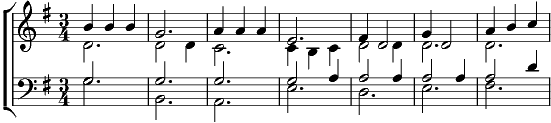

1. Il navigait le patriarch'
Soufflant, crachant, et reniflant.
Il s'en allait dans le gros temps,
Le vieux Noé sur sa grande arch'.
Refrain:
Dis-moi, Patron, dis-moi, Barbu,
Saurais-tu arrêter la pluie?
Tu es si bon; je suis si nu.
Si t'inventais le parapluie.
2. Y'avait l'aîné au gouvernail
Du vieux rafiot tout vermoulu.
Le Pèr' Noé avait trop bu
L'aurait pu tomber à la baill.
Refrain
3. Depuis des s'main's, c'est à ficell's
Que le ciel déversait son eau
Sur les marins et le troupeau,
De ragondins et de gazell's.
Refrain
4. Pas un rayon dans la grisaille
Et de ciel bleu, pas un tacon!
C'est pas du jeu. C'est la mousson
En plein mois d'août, mais quell' pagaill' !
Refrain
5. Il semblerait qu'en fin d'semain'
Le temps s'arrang' vers Arafat.
Barre à tribord et branlebas!
On voudrait pas rater l'aubain' !!!
Refrain
Coda